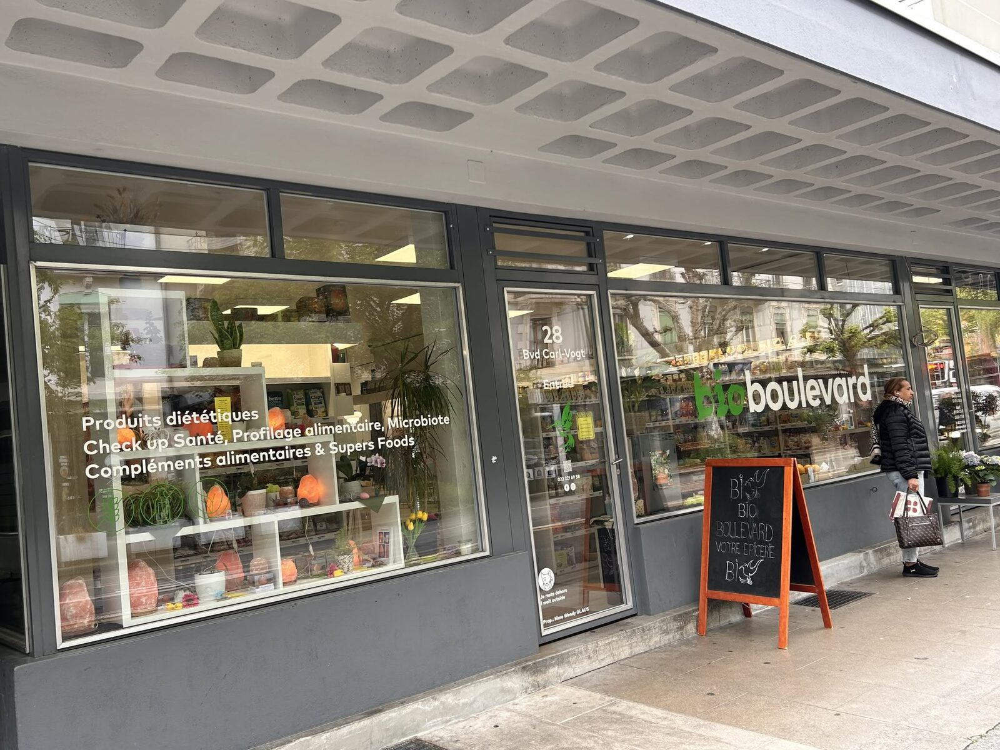
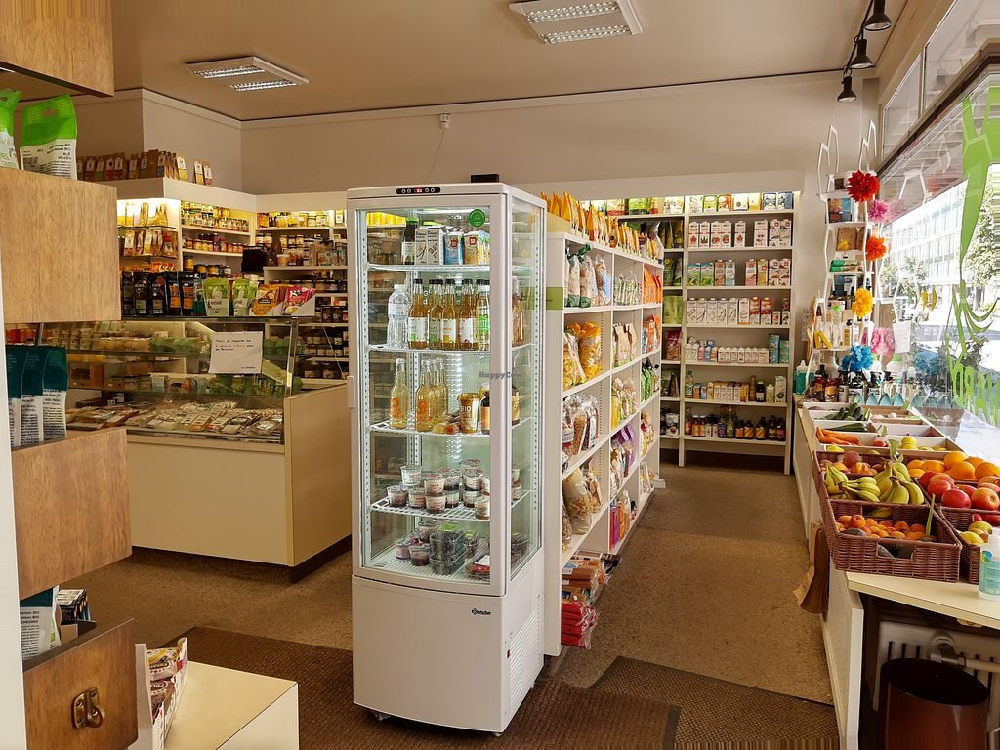
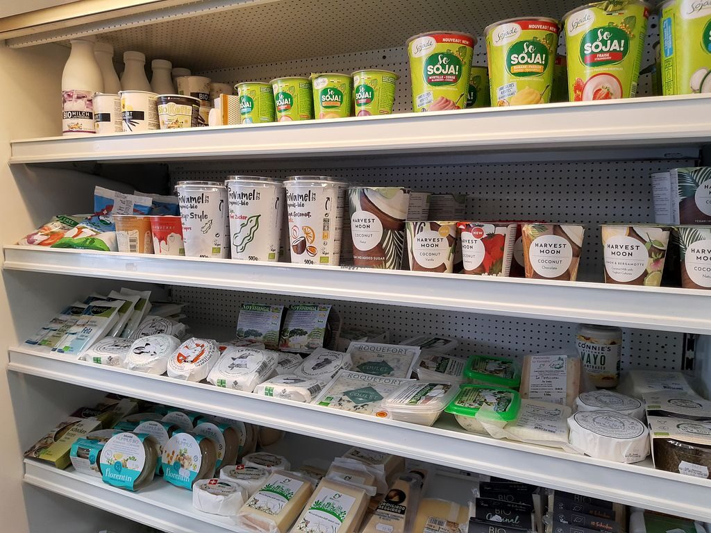
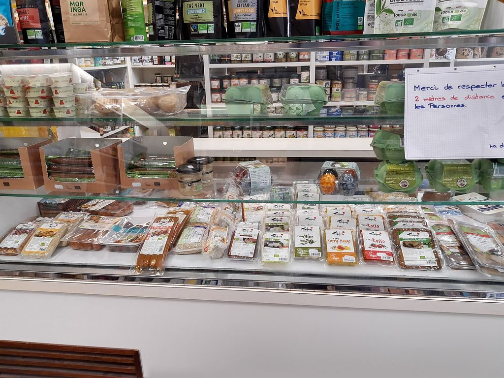
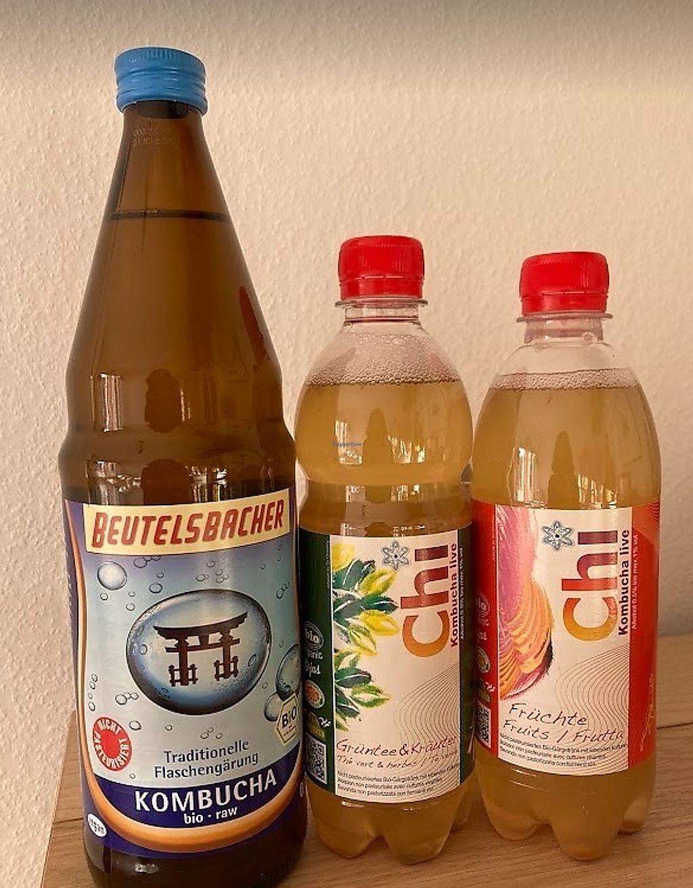
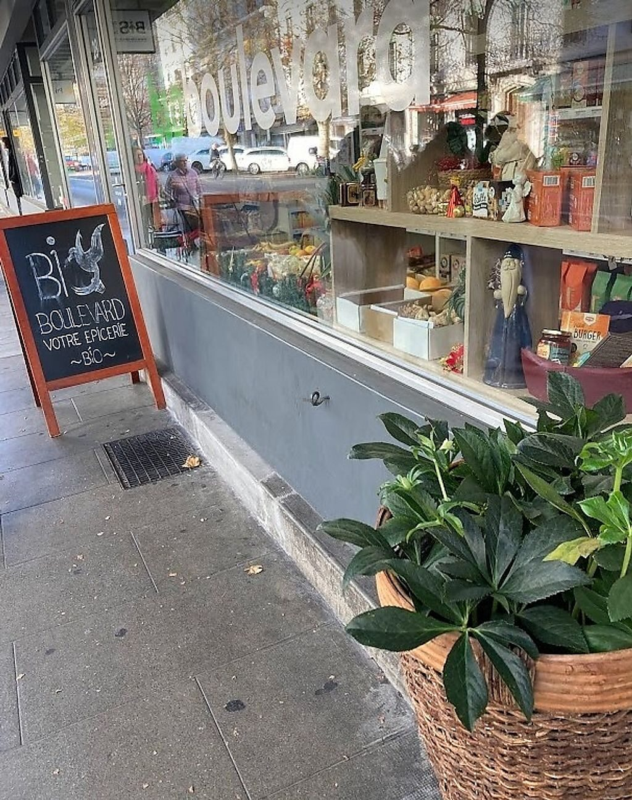

Épicerie bio & santé · Jonction, Genève
Le bio, le vegan et le vrac,
au cœur de la Jonction.
BioBoulevard, c'est l'épicerie 100 % bio du quartier : produits locaux, large gamme végétale, sans gluten ni lactose, compléments, cosmétiques naturels et vente en vrac. Votre bien-être, au cœur de nos préoccupations.
- Horaires du jour
- 100 % bio
- Vrac & zéro déchet
- 3,5/5 · HappyCow

Nos rayons
Tout le bon, le bio et le végétal
sous un même toit
Des fruits & légumes au vrac, en passant par les compléments et les cosmétiques : une sélection choisie pour votre santé et celle de la planète.
-
Épicerie bio & locale
Fruits & légumes, épicerie sèche et boissons : du 100 % bio, au plus près des producteurs.
-
Sans gluten, lactose & sucre
Une large sélection pensée pour chaque intolérance et chaque régime alimentaire.
-
Gamme végétale & vegan
Tofus, farines, kombucha, kéfir de fruits : l'un des plus beaux choix vegan du quartier.
-
Compléments & super-aliments
Vitamines, compléments alimentaires et super-aliments pour soutenir votre équilibre.
-
Cosmétiques naturels
Une boutique beauté au naturel, douce pour la peau comme pour la planète.
-
Vrac & zéro déchet
Faites le plein dans vos contenants : moins d'emballages, juste l'essentiel.
Les prix ne sont pas affichés en ligne — passez en boutique ou appelez-nous, on vous renseigne avec plaisir.
La maison
Une épicerie de quartier qui prend soin de vous
Au cœur de la Jonction, BioBoulevard — l'enseigne santé de VivaVeg — réunit le meilleur de l'alimentation bio, locale et végétale. Du rayon vrac aux compléments alimentaires, en passant par les cosmétiques naturels, chaque produit est choisi pour votre bien-être et celui de la planète.
Au-delà des rayons, nous animons régulièrement des dégustations et des conférences bien-être — huiles essentielles, équilibre émotionnel et bien d'autres thèmes. Notre équipe est là pour vous conseiller, simplement.
- 100 % bio & local
- Large choix végétal & vegan
- Vrac & zéro déchet
- Dégustations & conférences
« Votre bien-être au cœur de nos préoccupations. »





Vos avis
Ce que vous en dites
-
Au-dessus de la moyenne pour sa taille : une sélection bien organisée, avec plus de produits vegan que dans les magasins comparables.
HC-Zurich
-
J'ai adoré la large gamme végétale — plusieurs sortes de tofu, des poudres, des biscuits et de jolies douceurs.
MajoExploradora
-
Beaucoup de choix pour les végétaliens, un personnel serviable et une belle sélection de farines.
LionelTheAvocado
Contact
Une question ? Écrivez-nous
Passez en boutique ou contactez-nous directement — on adore parler bien-être, produits et petites trouvailles.
- Téléphone 022 321 69 58
- E-mail info@bioboulevard.ch
- WhatsApp Écrire sur WhatsApp
- Boutique Boulevard Carl-Vogt 28, 1205 Genève
Nous rendre visite
Au cœur de la Jonction
Boulevard Carl-Vogt 28, 1205 Genève Voir l'itinéraire
| Lundi – Vendredi | 09:30 – 19:00 |
|---|---|
| Samedi | 09:30 – 18:00 |
| Dimanche | Fermé |
Horaires d'été possibles : ils peuvent varier selon la saison. Un doute ? Appelez-nous.